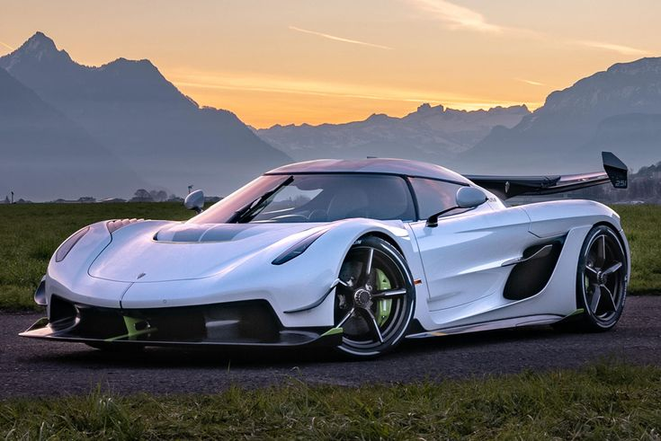

Aqui estão algumas infromações sobre o Koenigsegg Jesko Absolut
Para informações mais completas clique AQUI
O Koenigsegg Jesko Absolut é o carro mais rápido do mundo!
Ele é equipado com uma motor V8 biturbo de 5.0 litros produzindo incriveis 1623 cavalos de potência.
O seu 0-100 km/h em 2,6 segundos.
Ele é tração traseira e sua velocidade final é de até 531 km/h
O Koenigsegg Jesko Absolut está custando seus R$ 15 milões de reais
estamos com o último Koenigsegg Jesko Absolut

Entre em contato conosco clicando neste link abaixo:
Para voltar à página inicial, clique AQUI